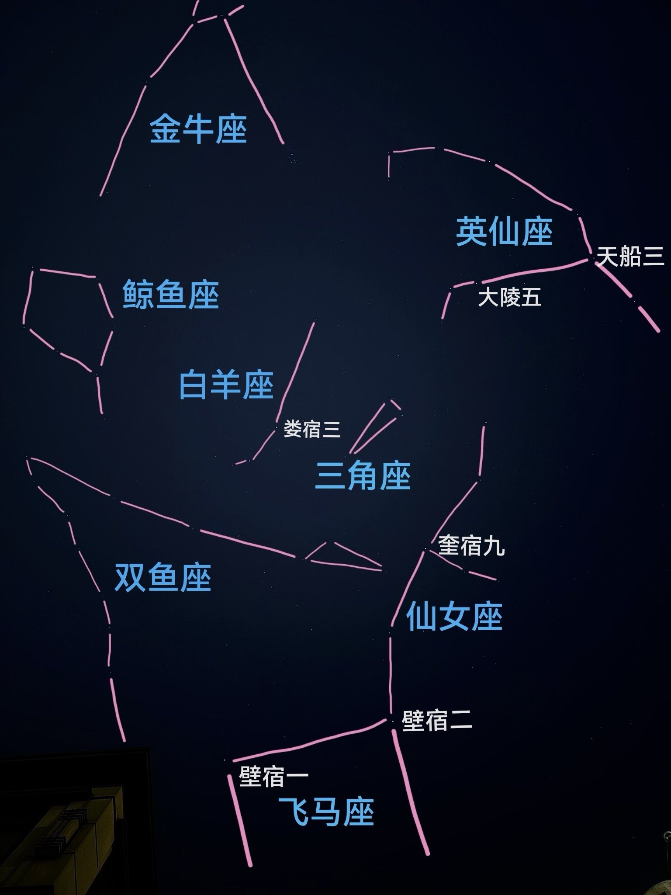
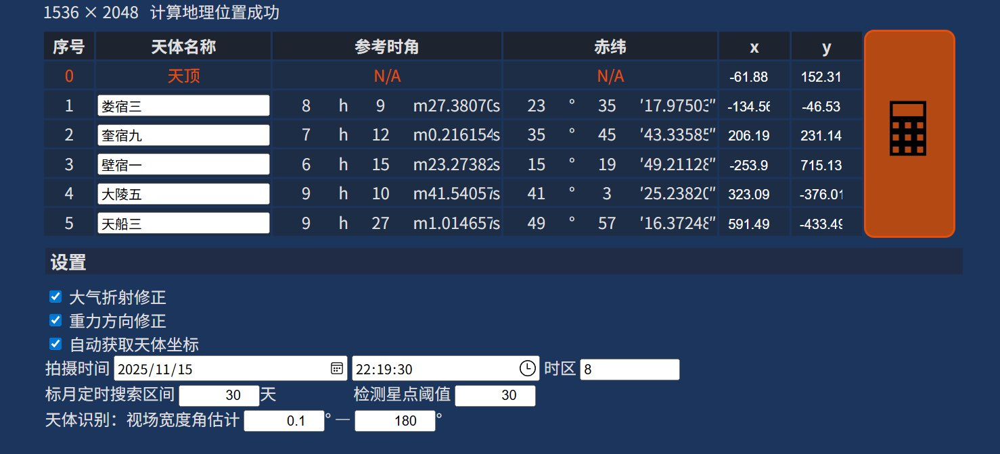
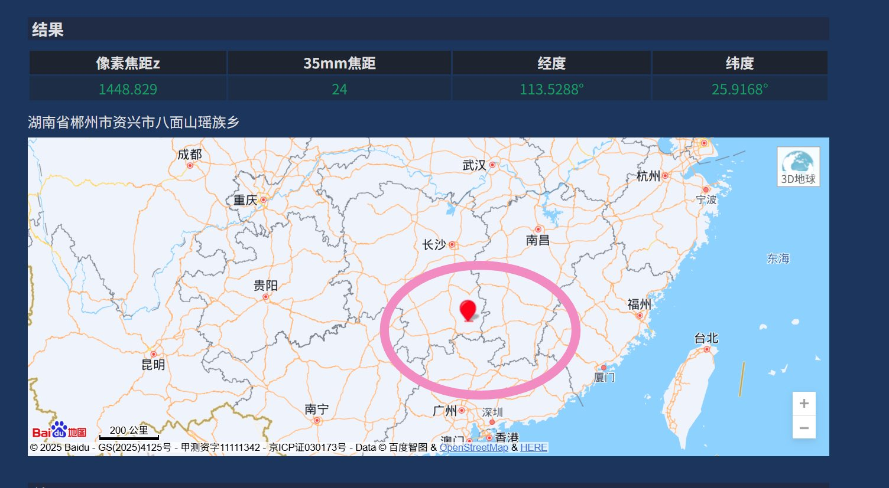

@Cldeop 咱的答案是大致在江西、湖南南部到广西西部和广东…期待一下标准答案…欢迎指正，请恕解题过程潦草喵づ♡ど




喵，好耶
所以如图一手动识星，再标注铅垂线
然后利用下面链接的现成工具
结论是拍摄位置大致在图四粉圈中
这图难度在于缺乏地面参照物…很难通过铅垂线焦点精确天顶位置…还有图片边缘有比较明显的广角畸变…于是误差可能有上百公里
能提供日期的话更好哦，这里假定是昨天❛˓◞˂̵✧
如有错误欢迎指正 https://t.co/kLLi8LhVzW https://t.co/7rV95gPgCE
所以如图一手动识星，再标注铅垂线
然后利用下面链接的现成工具
结论是拍摄位置大致在图四粉圈中
这图难度在于缺乏地面参照物…很难通过铅垂线焦点精确天顶位置…还有图片边缘有比较明显的广角畸变…于是误差可能有上百公里
能提供日期的话更好哦，这里假定是昨天❛˓◞˂̵✧
如有错误欢迎指正 https://t.co/kLLi8LhVzW https://t.co/7rV95gPgCE